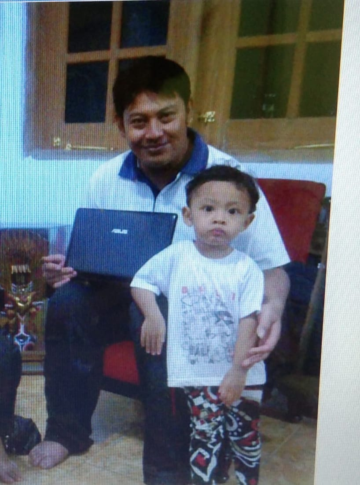
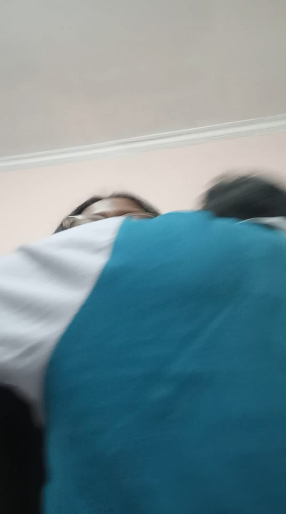
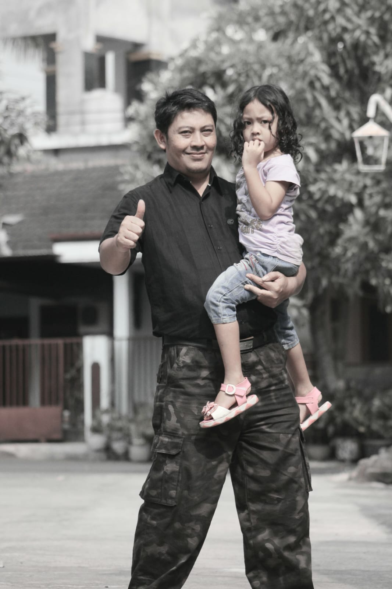
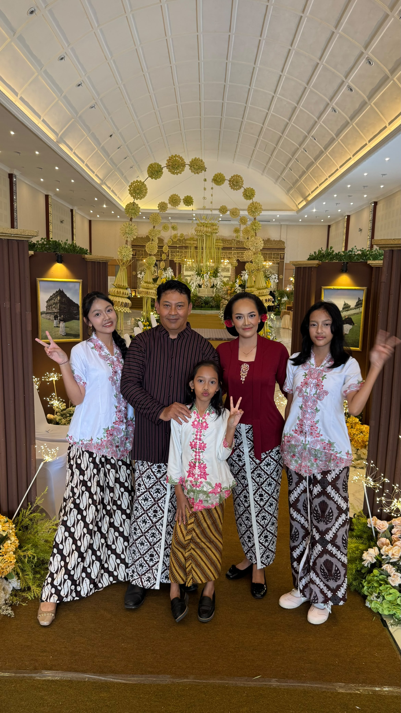
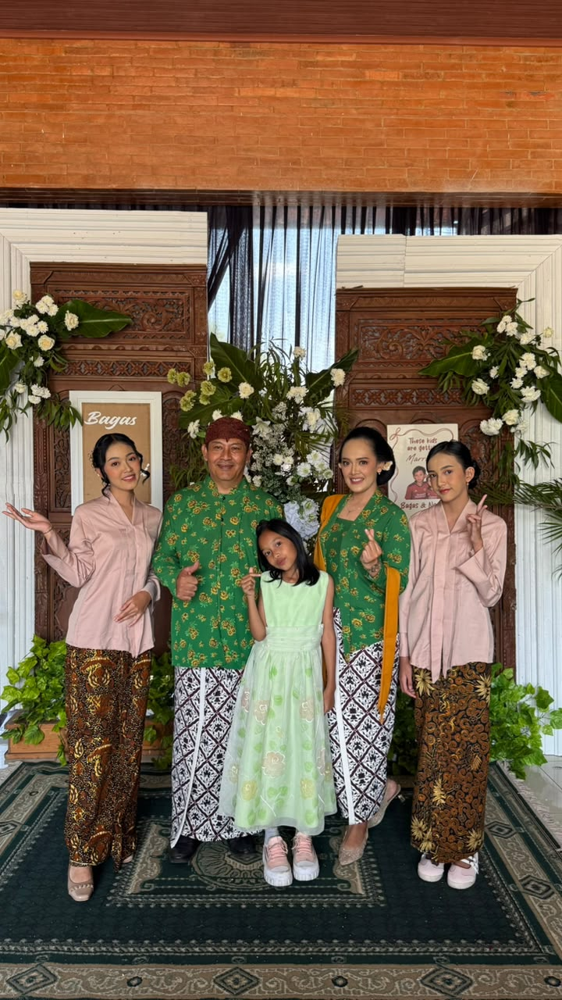

go to Our Song first, then play the song, then go back to Home.
Behind every beautiful memory, there is a father who quietly makes everything feel like home.
Open Our Memories ♡November 12 · Father's Day
A HOME FULL OF LOVE
It is the laughter around the table, the little moments we sometimes forget, and the people who make every ordinary day feel special.
OUR PRECIOUS MOMENTS
Some moments may pass, but the memories will always stay with us.

Our little world ♡

Beautiful days

Always together

Our happiness

A memory with Dad
Forever grateful
A LETTER FROM THE HEART
I have always wondered how to put my feelings into words, especially when it comes to someone as important as you. There are so many things I wish I could say, so many little moments I wish I could thank you for, and so many feelings that sometimes seem too big to fit into a simple sentence.
So today, I want to take a moment to write something that I hope you will remember. Not just today, not just on Father's Day, but whenever you need a little reminder of how much you are loved.
When I was little, I probably didn't understand much about the world. I didn't know how difficult life could be, how many responsibilities an adult had to carry, or how much effort it took to build a home and keep a family together. I simply knew that you were Dad, someone who was always part of my little world.
But as time goes by, I begin to understand things differently. I realize that behind the ordinary days were countless efforts. Behind the things I once took for granted were sacrifices I might never fully understand. And behind so many of our happy memories was someone who kept trying to give his family a better life.
Perhaps I haven't always noticed it. Perhaps I haven't always said thank you. There may even have been days when I was too busy growing up to realize that you were growing older too.
And if there is one thing I wish I could do, it would be to pause time for a little while. Just long enough to appreciate the little things more, to listen to your stories again, to enjoy our ordinary conversations, and to make more memories with you.
Dad, I want you to know that you don't have to be perfect to be loved. You don't have to have all the answers, and you don't have to be strong every single day. You are human, too. You have your own dreams, worries, tired days, and stories that I may not always know about.
I hope you never forget that you are not only someone who takes care of this family. You are also someone who deserves happiness, kindness, appreciation, and all the beautiful things this world has to offer.
I hope life treats you gently. I hope your days become lighter, your heart stays peaceful, and you always find reasons to smile. I hope you get to experience the happiness you have worked so hard to give to the people around you.
As your daughter, I know I still have so much to learn. I have dreams to chase, lessons to discover, and a long road ahead of me. There will be days when I succeed and days when I stumble. There will be moments when I feel lost, and moments when I finally find my way.
But wherever that road takes me, I hope I will always carry the values, memories, and lessons I have learned from my family. I hope I can grow into someone who makes you proud, not only because of what I achieve, but because of the person I become.
Maybe someday, when I am older and look through these photographs again, I will remember every little detail. The smiles, the laughter, the silly moments, the family gatherings, and all those ordinary days that turned out to be extraordinary.
And when that day comes, I hope I will still be able to look at you and say, "That's my Dad." With the same love, the same gratitude, and perhaps an even deeper understanding of what it means to have you in my life.
Thank you for being one of the most important chapters in my story. Thank you for being part of my childhood, my present, and all the memories I will carry into the future. Thank you for every effort, every lesson, every laugh, and every moment that made our family what it is today.
I cannot promise that I will always find the right words to express how I feel. Sometimes, I may simply show it through little things. But I hope you will always know that my love and appreciation for you go far beyond what a single letter can hold.
A MELODY FOR OUR FAMILY
Some feelings are too beautiful to be expressed in words.
A little melody, a thousand memories.